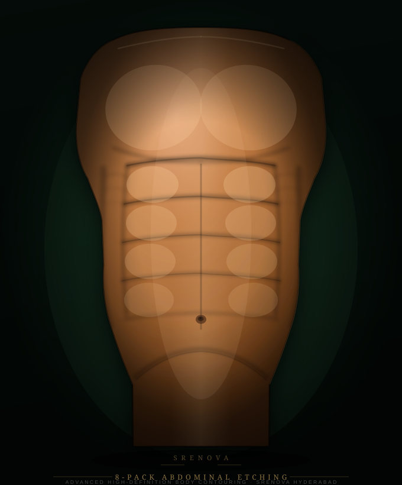

01
Step 01Advanced candidacy
Full-length muscle development, skin elasticity and body fat percentage are assessed in detail.
8-Pack Abs Surgery extends high-definition abdominal etching to four pairs of muscle segments — two more than the standard 6-Pack procedure — creating a more pronounced and fully-defined abdominal appearance.
Suitable candidates need strong underlying musculature, good skin elasticity and a stable, lean body composition. The consultation determines whether anatomy supports eight-segment definition.

Full-length muscle development, skin elasticity and body fat percentage are assessed in detail.
All four muscle-segment pairs are carefully marked to ensure symmetrical, natural-looking definition.
Compression, activity restrictions and the swelling timeline are planned and confirmed before surgery.
The 8-Pack procedure requires the fourth pair of rectus abdominis segments to be sufficiently developed — a criterion that not all patients meet. A consultation will confirm whether anatomy supports eight-segment etching or whether the 6-Pack is the more appropriate option.
Patients considering this procedure typically have a strong fitness background and are seeking the most defined abdominal result surgically achievable.
The right choice depends on your anatomy, not preference alone.
More commonly achievable; requires moderate muscle development.
Requires strong full-length development including upper pair.
The fourth pair (upper abdomen) must be independently developed.
Good elasticity is essential for clean, defined results in either procedure.
Quick clarity before the consultation so the conversation is more useful.
Specialist-performed under anaesthesia.
Four pairs of the rectus abdominis defined.
Compression garment and restricted activity required.
Final definition visible at 2–3 months as swelling settles.
Clear answers help patients make an informed decision before the consultation.
Not necessarily — it depends entirely on anatomy. If the upper muscle segments are underdeveloped, 8-Pack etching will not produce visible results there. The better procedure is the one your body can support.
Patients with strong full-length rectus abdominis development, low body fat, good skin elasticity, and a stable weight. A consultation confirms whether eight-segment anatomy is present and achievable.
Recovery is broadly similar — compression garment for 3–4 weeks, restricted exercise for 4–6 weeks, with final results visible at 2–3 months. The more extensive etching may mean slightly more soreness in the first week.
It is unlikely to produce good results. The procedure reveals existing muscle; patients with low muscle development will not have the structural foundation needed for defined eight-segment etching.
When planned around anatomy and individual muscle structure, results appear natural. Over-aggressive removal or poor skin elasticity can create an unnatural look — which is why careful assessment matters.
If eight-segment anatomy is not confirmed, 6-Pack Abs Surgery may deliver strong results with a less demanding candidacy requirement.
Book a SRENOVA consultation for an honest anatomical assessment and a surgical plan suited to what your body can support.